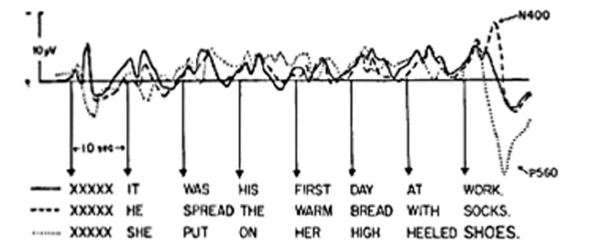
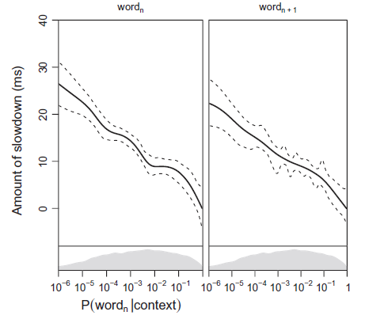
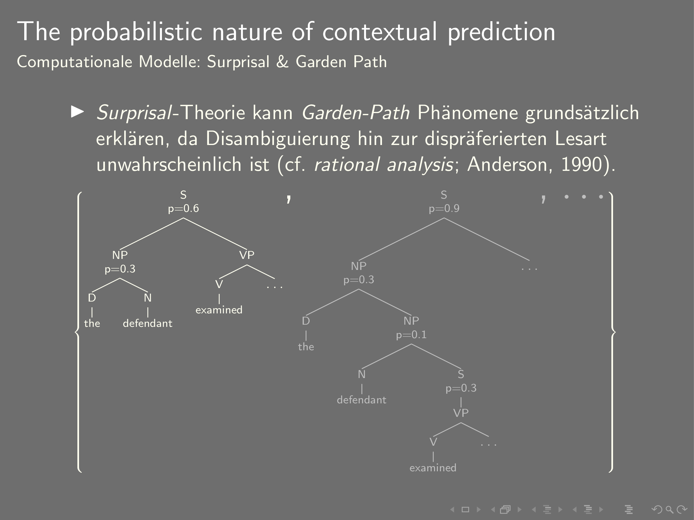
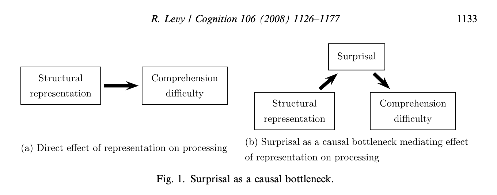

Psycholinguistisches Schülerlabor
Erwartungen in der Psycholinguistik & Experimente zu ausgerechnet
Fabian Schlotterbeck
Universität Tübingen

Erwartung und Prädiktion in der Psycholinguistik
N400
(Kutas & Hillyard, 1980)
Surprisal theory
- Verabeitungsschwierigkeit (z.B. Lesezeit oder N400-Amplitude) proportional zu Informationsgehalt, aka Surprisal (Smith & Levy, 2013; Levy, 2008; Hale, 2001)
Garden-Path Sätze in der Surprisal Theorie
Causal Bottleneck
...und in Large Language Models (LLM)
LLMs nutzen Transformer Architektur, um nächstes Wort vorherzusagen
Experiment zu erwartungswidrigen Fokuspartikeln
Einführung
- Fokuspartikeln:
A focus particle is a particle that accompanies an element that is focused and that expresses various meanings related to the focusing [😀] (Glottopedia)
Partikeln, die [...] bestimmte Elemente eines Satzes [hervorheben]. Zusammen mit deren [fokussierten] Bezugsausdruck bilden sie den Informationskern des Satzes. Weglassen [...] verändert nicht die grammatische Richtigkeit [...] aber die Bedeutung des Satzes. (Dimroth, 2004)
- Bekannte Gruppen: restriktive, additive und (hybride)
skalare Fokuspartikeln
allein, auch, auch nur, ausgerechnet, ausschließlich, bereits, besonders, bloß, einzig, eben, ebenfalls, erst, gar, genau, geschweige denn, gerade, gleich, gleichfalls, insbesondere, lediglich, (nicht) einmal, noch, nur, schon, selbst, sogar, vor allem, wenigstens, zumal, zumindest (König 1991)
- Restriktive Fokuspartikeln (z.B. nur, ausschließlich)
| Lara | ||
| Nur | Yuwei | hält einen Vortrag über Fokuspartikeln |
| Tamara |
- Additive Fokuspartikeln (z.B. auch, ebenfalls)
| Emma | ||
| Auch | Yuwei | hält einen Vortrag über Fokuspartikeln |
| Fabian |
- Es gibt aber auch Fokuspartikeln, die sich nicht klar einer dieser beiden Gruppen zuordnen lassen (ausgerechnet, gerade, eben, genau)
Vorschlag
Erwartungswidrige Fokuspartikeln
(ausgerechnet, gerade, eben, genau)
„Die erwartungswidrigen Fokuspartikeln heben die Unwahrscheinlichkeit des Bezugsausdrucks in Relation zu allen möglichen Alternativen hervor, indem er als (sehr) unerwartet bestimmt wird.“
Experimentelles Design
Kontext Typ I (medium expectancy)
Peter ist nicht gut in der Schule. Besonders Mathe fällt ihm schwer. Trotz ständiger Nachhilfe kommt er nicht mit den anderen mit. Letzte Woche haben die Schüler eine Matheprüfung geschrieben. In der heutigen Stunde wurden die Prüfungen dann endlich zurückgegeben.
Target-Satz
- Peter...
- Nur Peter...
- Ausgerechnet Peter...
Experimentelles Design
Kontext Typ II (high expectancy)
Peter ist in der 8. Klasse. Seit letzter Woche ist die Aufregung unter den Schülern groß, weil sie eine Matheprüfung geschrieben und seither gespannt auf die Ergebnisse gewartet haben. In der heutigen Stunde wurden die Prüfungen dann endlich zurückgegeben.
Target-Satz
- Peter...
- Nur Peter...
- Ausgerechnet Peter...
Experimentelles Design
Faktoriells 2 (Kontext; Type I & Typ II) $\times$ 3 (Partikel: ohne, RA & EW) within-items and within-participants Design
Vorgehensweise
- Diskurs-Fortsetzungsexperiment, um Kontexte und prototypische Fortsetzungen auszuwählen. (simulieren wir heute mit LLMs)
- Fortsetzungs-Auswahl-Experiment (habt ihr heute gemacht)
Hypothesen und Vorhersagen
- Restriktive und additive (RA) Fokuspartikeln folgen den Diskurserwartungen, wie bei Abwesenheit (OH) von Partikeln
- RA und OH verhalten sich ähnlich
- Erwartungswidrige (EW) Partikeln lizensieren Foretzungen, die an sich unerwartet sind
- EW verhalten sich anders als OH/RA und reagieren entgegengesetzt auf Manipulation der kontextuellen Erwartung